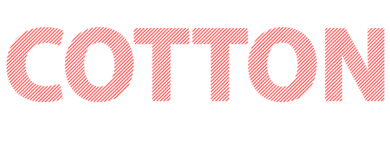
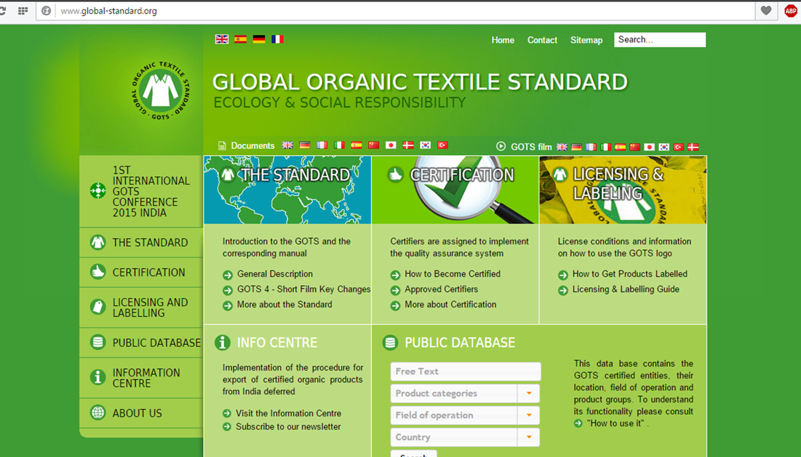
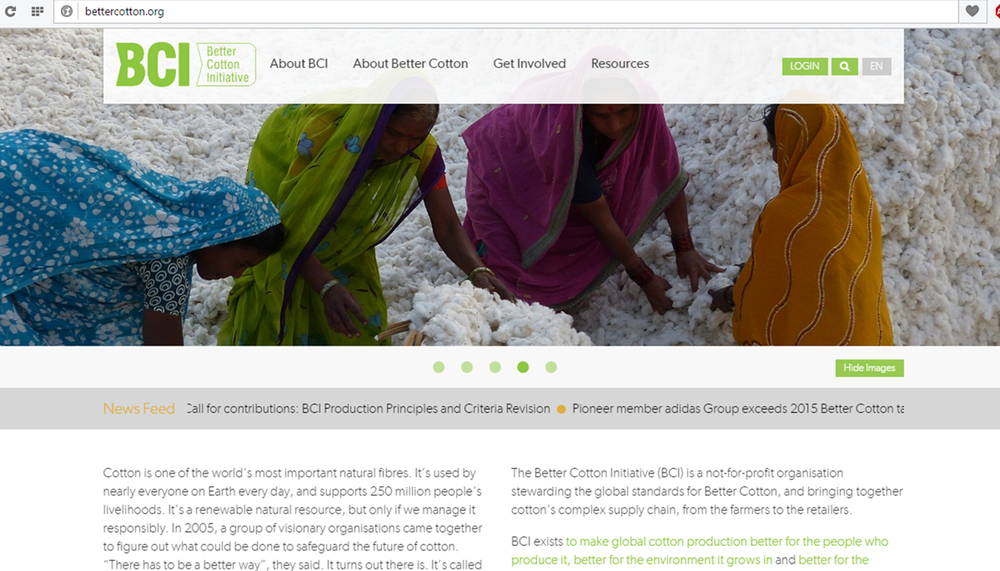

Pioneers of quality cotton yarn
Challenging the present, defining the future
Overview
We intend to steadfast our dominance in the textile industry by standing out as the largest producer of raw cotton and processed cotton yarn. Our strategic location of our spinning capacities in Gujarat, India provide us an edge over our competitors and with quality working environment for over 500 employees, we process more than 60000 MTs/Yr. of raw cotton.
Global Outreach
Our primary export destinations for raw cotton and processed cotton Yarn include China, Bangladesh and Pakistan. Significant investments have been undertaken to optimize our supply chain and improve quality inspection. We intend to strengthen and develop an extensive global network with customers based on mutual trust and quality services.

Strategy
We are adopting best practices in benchmarking, human resource development and quality certifications. The presence of state-of-the art manufacturing capacities and adequate supply of raw materials ensure premium quality grade cotton yarn. The inclusion of quality control units in the entire value chain has helped us gain a competitive advantage in the market.
Processing 15 million kgs of raw cotton per year
With a robust supply chain and our long term association with farmers we ensure high quality raw cotton input. Our exhaustive quality control policy make sure our agents aid the farmers in producing a surplus output by providing year around supervision in seed sourcing, growing and harvesting. The raw cotton is further processed in our ginning industry for the separation of lint and seed. Reduction of moisture and removal of unwanted foreign material during the process enhance the fiber quality. Seeds are separated from the cotton by the action of a circular saws that pull the lint through closely spaced ribs and prevent the seeds from passing though. The lint is later compressed in the form of bales weighing approximately 500 pounds while the seeds are processed to obtain cotton oil (crude rice bran oil). Our just-in time production ensures efficient inventory management as per the required demand.

Cotton is not only the most important natural fiber but also and irreplaceable commodity. With over 55 million people’s livelihood depending on this previous commodity, it is imperative to look into its efficient management and sustainability. We play our part in this cause to safeguard the future of the cotton industry.Through our channels at the field level support and train farmers in the subject of growing the best quality cotton.We ensure we develop a robust supply chain channel to prevent any loss of resources. Our rigorous quality control procedures provides the grounds for providing important feedback to the farmers, thereby ensuring their growth. We are registered under certified programs such as the better cotton initiative (BCI) and the Global organic textile standards (GOTS) to contribute our part in the sustainable effort of preserving this commodity.
15%
Earnings of Manufacturing Sector
22%
Country's total Exports Earnings
4%
Countrubution to India's GDP
40%
Textile Industry Earnings
Certifications such as the
Better Cotton Initiative (BCI)
and
Global Organic Textile Standards (GOTS)
on our products help us establish ourselves as trusted quality suppliers and support the sustainable development of the cotton commodity.



VaibhavLaxmi sees no end to endeavor. The company moves towards an ever-widening horizon of discovery, improvement and further success.

~ Mr. Niranjan Patel
Director, VaibhavLaxmi Exports
Director, VaibhavLaxmi Exports
We believe that the right mix of technological advancements, quality products and strong relations can help us stand out as a trusted supplier at the forefront of the textile industry
~ Rakesh Patel
Operations Head, VaibhavLaxmi Exports
Operations Head, VaibhavLaxmi Exports
We are just a few words away. Tell us how we can help you!
We will get back to you soon.